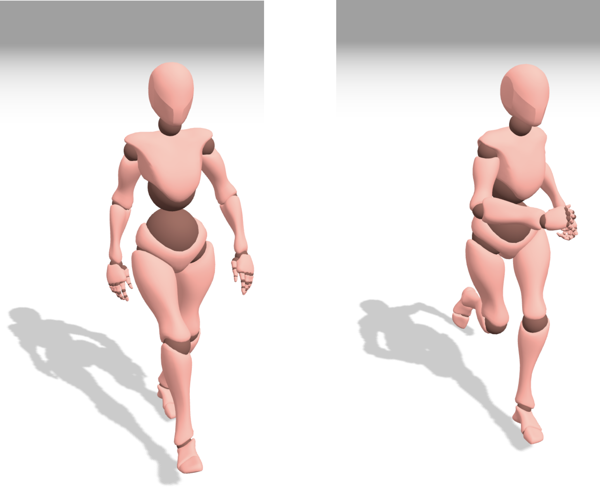

|

|
|
Abstract:
We present an end-to-end method for capturing the dynamics of 3D human characters and translating them for synthesizing new, visually-realistic motion sequences. Conventional methods employ sophisticated, but generic, control approaches for driving the joints of articulated characters, paying little attention to the distinct dynamics of human joint movements. In contrast, our approach attempts to synthesize human-like joint movements by exploiting a biologically-plausible, compact network of spiking neurons that drive joint control in primates and rodents. We adapt the controller architecture by introducing learnable components and propose an evolutionary algorithm for training the spiking neural network architectures and capturing diverse joint dynamics. Our method requires only a few samples for capturing the dynamic properties of a joint's motion and exploits the biologically-inspired, trained controller for its reconstruction. More importantly, it can transfer the captured dynamics to new visually-plausible motion sequences. To enable user-dependent tailoring of the resulting motion sequences, we develop an interactive framework that allows for editing and real-time visualization of the controlled 3D character. We also demonstrate the applicability of our method to real human motion capture data by learning the hand joint dynamics from a gesture dataset and using our framework to reconstruct the gestures with our 3D animated character. The compact architecture of our joint controller emerging from its biologically-realistic design, and the inherent capacity of our evolutionary learning algorithm for parallelization, suggest that our approach could provide an efficient and scalable alternative for synthesizing 3D character animations with diverse and visually-realistic motion dynamics.
|

![[PHOTO]](../../images/knight_small.png)